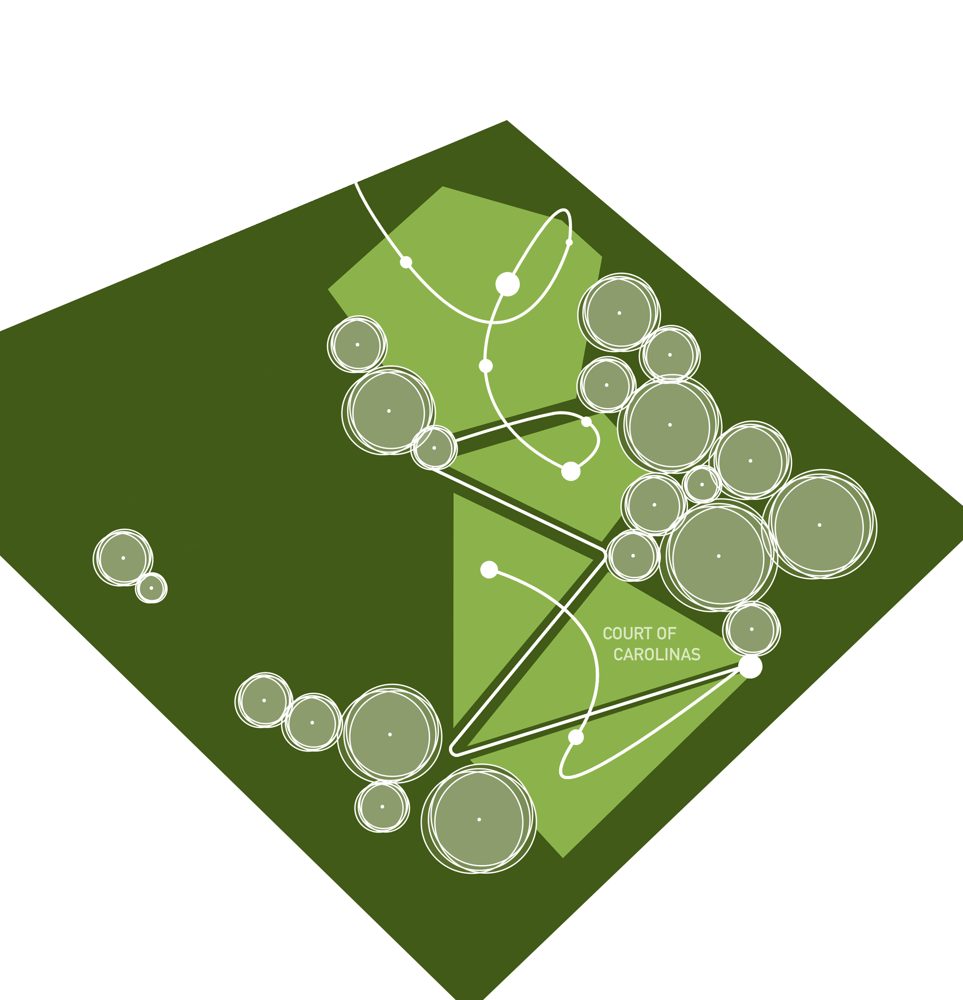

Broadsheet & Web Design by allegra matthews
"These spaces are designed
to be flexible, but also to be
gathering spaces or central
points."
are these exclusively
transitional spaces?
As seen by the data represented,students at
NCState use the Court of the Carolinas primarily
as a transitional space and secondly as a green
space for studying. relaxing, and socializing.
Though simply walking through green spaces also
contributes to a decrease in depression, spending
30 minutes or more in an outdoor space shows a
significant increase in mental and physical health.
"This passageway is probably the
easiest to navigate just because
you walk through and follow the
trails and there are different,
multiple trails around here."